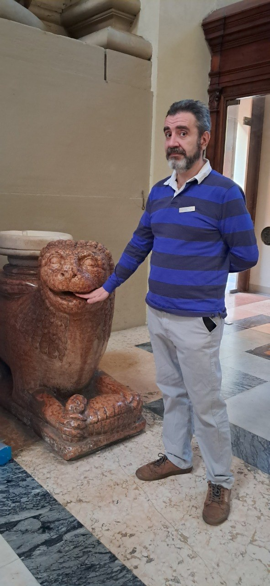
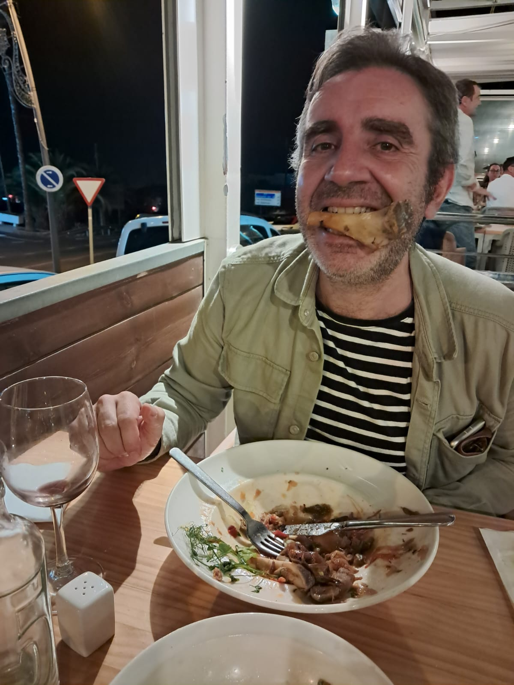
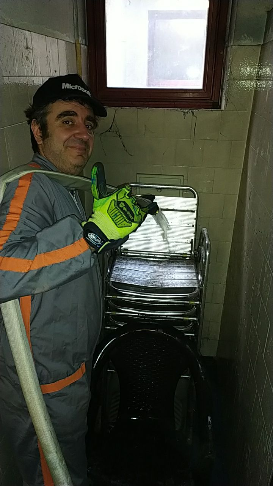
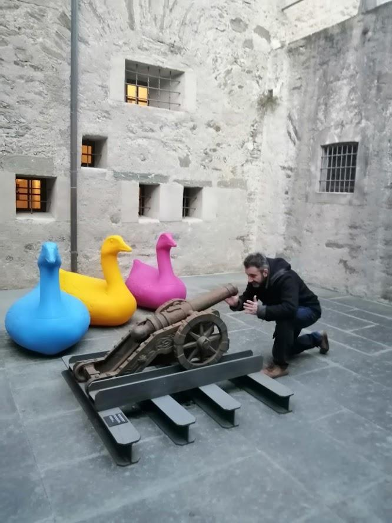
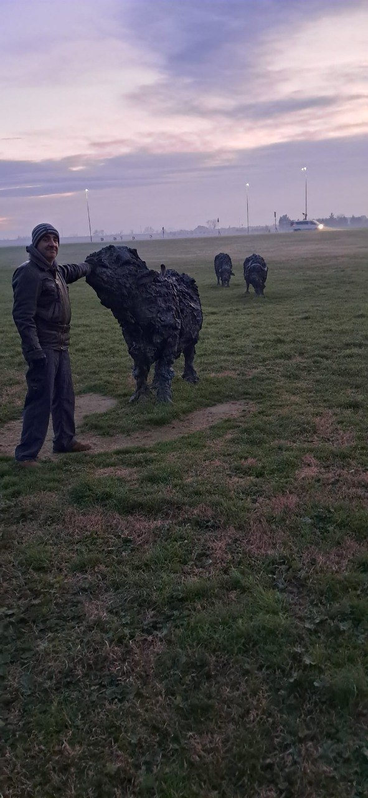
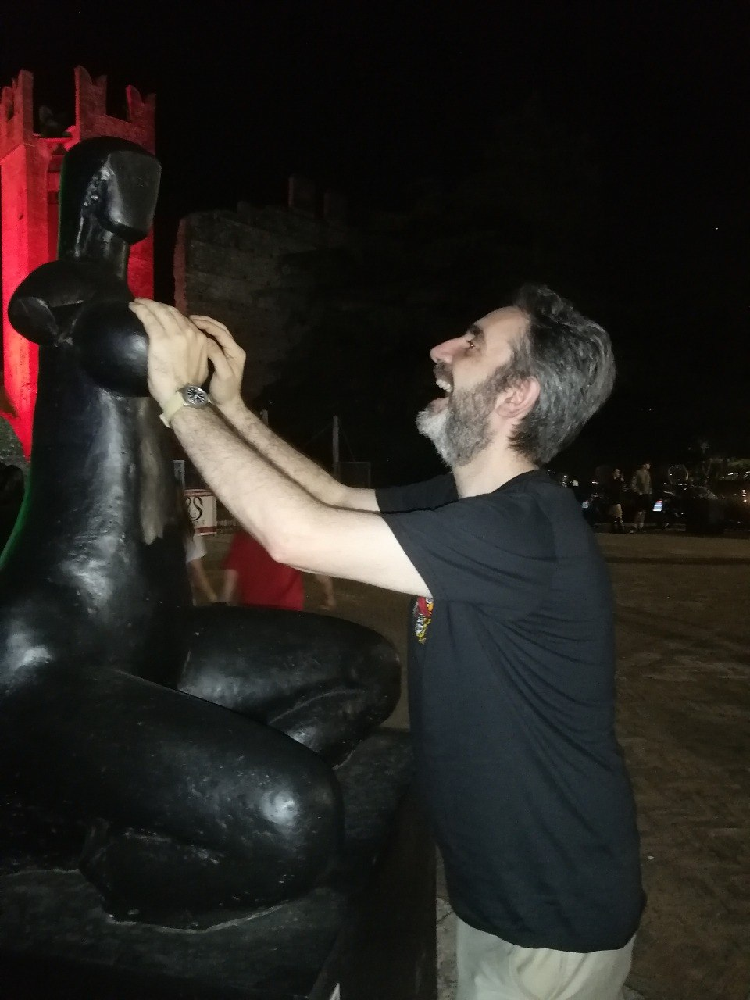
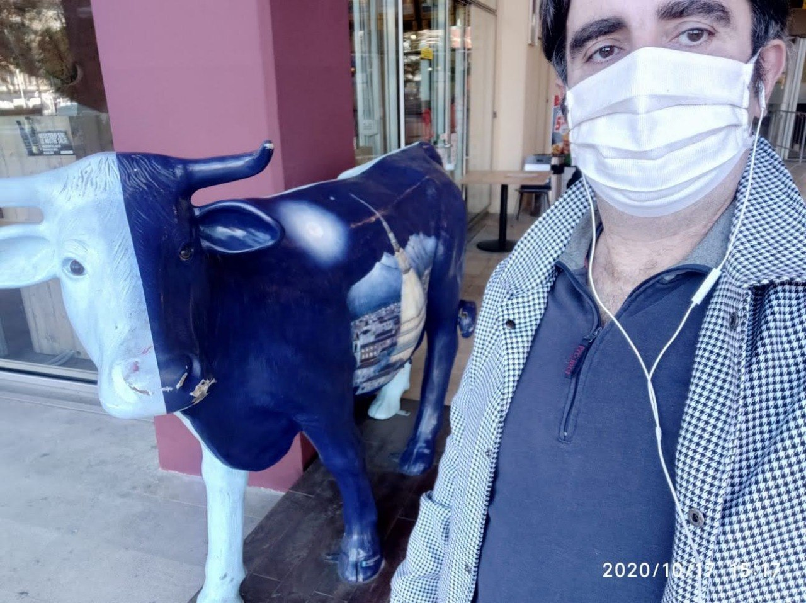
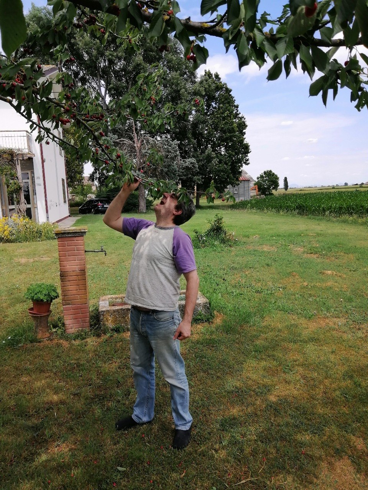

Poltroweb bonus track number two: the twelve labours of the Poltro, documented wherever a camera happened to be present. Historians claim somebody called Hercules did these first. Historians, however, have no photos. We do.
Twelve impossible tasks were set before the Poltro, presumably by someone who wanted him out of the house. He completed all twelve. Eight were caught on camera; for the other four the beasts involved declined to sign the photo release. Read on, and marvel.
A lion with a hide no blade could pierce. The Poltro subdued it so thoroughly that it turned to stone on the spot and has been used as church furniture ever since. Here he is checking its teeth, hand resting comfortably inside the jaws of a predator that once terrified an entire region. Note the expression: this is a man for whom strangling apex predators is a Tuesday.

Cut off one head, two grow back. The Poltro solved it the usual way. Photographing it, however, proved impossible: every time the photographer said "hold still", two more heads came into frame and ruined the composition.
| [Photo unavailable. The subject kept growing extra heads out of shot.] |
A deer too fast to catch and too sacred to harm. The Poltro chased it for a full year and brought it back without a scratch. The pursuit took so long that by the end the camera battery was dead, the film was expired, and the photographer had gone home.
| [Photo unavailable. One year of chasing, zero seconds of standing still.] |
A monstrous boar, driven into deep snow, exhausted, and supposedly carried home alive on the Poltro's shoulders. The ancient sources leave out one detail: alive lasted exactly until dinner. The modern record shows the labour concluded not with a triumphant procession but with a quiet table by the sea, a fork, and a bone worn proudly between the teeth like a trophy tusk, mid-chew, mid-grin. The king never got his live boar. The king was not invited to dinner.

Thirty years of filth, cleared in a single afternoon. Ancient sources speak of two rivers being diverted; the modern record shows the Poltro in regulation coveralls and high-visibility gloves, personally directing a fire hose at a tower of stacked chairs in a room whose walls had clearly given up long ago. The cap says Microsoft, because even legends have sponsors. Everything in that room is cleaner now. Everything.

Man-eating birds darkening the sky. Athena offered a pair of bronze rattles to scare them off. The Poltro thanked her politely and requisitioned a cannon instead. The photographic record shows him personally adjusting the elevation while three enormous fowl — one blue, one yellow, one pink — await developments with remarkable calm. They believe they are decorative. He knows better.

A rampaging bull, wrestled to a standstill at dawn in a fog straight out of a low-budget epic. The struggle was so decisive that the bull froze mid-snort and has not moved since. The Poltro, in sensible winter hat and gloves — heroism is no excuse for catching a cold — keeps one reassuring hand on its head. Two more bulls are visible in the background, patiently waiting their turn.

Four horses that ate people. The Poltro introduced them to their own master and the problem resolved itself over dinner. No photographs exist, and given the menu, this is probably for the best.
| [Photo unavailable, out of respect for the catering.] |
The war belt of the Queen of the Amazons, to be obtained by war or by diplomacy. The Poltro chose diplomacy. The photographic record captures the negotiations at their most cordial: the Queen, statuesque as ever, listens impassively while the Poltro, mid-laugh, reaches up to formally receive the royal accessories. The summit took place at night, under a dramatically lit castle, because the Poltro understands the importance of venue.

The prized cattle of a three-bodied giant, rustled from a distant island and herded home. The modern record shows the operation was carried out in broad daylight, in front of a shop, with the Poltro sensibly masked to protect his identity. He then took a selfie, which protected considerably less of it. Note the timestamp burned into the corner: even legends generate admissible evidence.

Golden fruit from a garden at the edge of the world, guarded by a hundred-headed dragon. On arrival, the edge of the world turned out to be a back garden in the Polesine, the golden apples turned out to be cherries, and the dragon was nowhere to be found. Rather than trick Atlas into fetching them, the Poltro pulled the branch down and ate the evidence directly from the tree, in slippers, as heroes do.

The final labour: descend into the underworld and bring back its three-headed guard dog, bare-handed. The Poltro did it, showed the beast around, and returned it to its post the same evening. The underworld enforces a strict no-photography policy, and Cerberus, like the Hydra before him, could not agree on which head should face the camera.
| [Photo unavailable. The underworld does not allow flash photography.] |
Twelve trials. Twelve wins. Eight photographs, four beasts in breach of their media obligations. Strength where strength was needed, a fire hose where it was not, a cannon at least once, and a fork where nothing else would do. No labour left unfinished, and every animal, apart from the catering incidents of Labours IV and VIII, returned in the condition it was found.
"Give the Poltro the impossible task. He will hand it back, solved, and eat the cherries on the way out."
[ Back to Poltro's Homepage ] | [ The Official-ish Biography ]
Twelve labours, one Poltro
Best enjoyed the way the rest of Poltroweb pretends the framework era never happened: grey background, honest pixels, documentary evidence only.